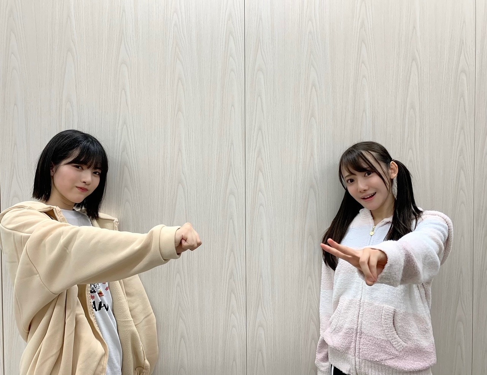

2020/1205Satお疲れ様です。楽しみいっぱいな林瑠奈です。
本日もお疲れ様です。
遅くなり申し訳ありません。
乃木坂46、4期生の林瑠奈です。
華咲くセブンのティーンの林瑠奈です。
負けるなしょげるな林瑠奈、今日も1日頑張るな
(ピンポーン)
45周目となりました、ブログリレー。
何度同じことをするんだと思われるかもしれません。
ブログ、書いたのに消えました。
でもね、前回と違うことがありまして
今回はなんとなく「あー消えてそうやな」って思ってたんですよ。
マーフィーの法則を実感した瞬間でした。
本当に気をつけます。
♪:*:･･:*:･･:*:･･:*:･･:*:･･:*:♪:*:･･:*:･･:*:･･:*:･･:*:･
火曜日、くろみちゃんと共にのぎおびを担当させていただきました。
見てくださった方、ありがとうございます。
普段からあんな風に雑な関係なのですが、驚かれた方もいましたでしょうか。
私としましては、もっとくろみちゃんの良さを引き出したかったなというのが正直な思いであります。
また2人で何かやらさせていただくことがありましたら、もっとエンジンかけますのでよろしくお願いします！

倍数コンビ。
♪:*:･･:*:･･:*:･･:*:･･:*:･･:*:♪:*:･･:*:･･:*:･･:*:･･:*:･
レコメン！乃木坂四期生メガ盛り祭り
12月7日（月）：掛橋、黒見、璃果
12月8日（火）：筒井、林、矢久保
12月9日（水）：柴田、清宮、松尾
のメンバーが出演致します。
いつも拝聴しているレコメン！さんに出させていただけるということで、本当に嬉しさ全開です。
ありがとうございます。
是非聴いていただけたらと。
26thシングル、『僕は僕を好きになる』
オンラインミート＆グリート（個別トーク会）の開催が発表されました。
【日程】
（１）1月31日（日）
（２）2月7日（日）
（３）2月14日（日）
（４）2月27日（土）
（５）3月14日（日）
（６）3月21日（日）
第2次受付
2020年12月10日（木）14:00～2020年12月11日（金）14:00まで
https://www.nogizaka46.com/smph/news/2020/12/-4626th.php
上記の日程で開催させて頂きます。
今から緊張が絶えませんが、是非応募していただけると幸いです。
なんだか、お知らせすることが多くて嬉しいです。
♪:*:･･:*:･･:*:･･:*:･･:*:･･:*:♪:*:･･:*:･･:*:･･:*:･･:*:･
M-1グランプリ2020のファイナリストが決まりましたね。
前回大会に引き続き
見取り図さん
ニューヨークさん
御二組も決勝進出ということで、わたしはテンションが上がりに上がっております！
2018年大会を引き金に好きになった見取り図さん。
当時は決勝初出場だった御二人が、
『決勝常連！』と言われていること。
"エモい"という言葉の使い所はここにあったのか、というほどエモいです。
18〜19年大会の間に、リリーさんの髪型がお洒落になっていると感じたのは、わたしだけでしょうか。
今年はどんな装いなのかも含めとても楽しみです！！
そして、ニューヨークさん！
わたしが色々な場で好きと言わせていただいている御二方。
さらばさんとお話しするときは、必ずと言っていいほどニューヨークさんの話になります。
わたしがニューヨークさんを好きだからというのもあるんですけど、
森田さんのニューヨークさん愛が凄いんですよ。
なんやかんや言うて好きやでスタイル。
キングオブコント2020も準優勝をとられたということなので、M-1グランプリでのご活躍も楽しみです。
人生の楽しみがまた一つ増えました。
♪:*:･･:*:･･:*:･･:*:･･:*:･･:*:♪:*:･･:*:･･:*:･･:*:･･:*:･
4期生ライブまで残すところあと1日となりました。
とにかく全力、全力の中の全力で頑張りますので何卒宜しくお願い致します！！
色々と話したいことは沢山ありますが、そちらはライブが終わってからということで。
明日はミュウちゃんです。
前よりもっともっと仲良くなったね。
明日もよろしく！頑張ろう！！
アディオス！！！！！！！
P.S.さやたんとさやかにやっとお誕生日渡せました
かしこ
コメント(213)
瑠奈ちゃん初のミーグリ無事にとれました！
色々お話出来ることが今からとても楽しみです。
そして、４期生ライブ当日だね
とにかく瑠奈ちゃんらしいライブにしてね！
ファイト
アディオス！
4期生ライブとっても楽しみです
ミーグリも沢山よろしくお願いします
まいより
ミーグリ初日25枚全部当てたからいっぱい喋ろ!!
初ミーグリやから緊張してるけどw
ライブも全力で楽しみにしてます!!
いつもの884倍かそれ以上に集中してみます!!w
4期生ライブ見るよーめっちゃ楽しみ
今年の4月くらいに乃木坂を好きになって今まで握手会というものに参加したことがないからミーグリ参加してみたいなって思ってます
レコメンももちろん聴くなー！
今日がライブだね。緊張しているだろうけど頑張って！！
ー質問ー
・最近見た夢ってなに？
・ついついやってしまう癖ってある？
・気晴らしではよく何をする？
ありがとう！次回も楽しみにしているよ。
私も結構コメントを全消ししてがびーんってなる事が多いです。書いている最中にキー操作を間違えているらしいのですが、どのキーなのか、まだ良くわかっていません。
4期生ライブ、当日ですね。準備は良いかな？私もチケットGETしましたっ！！予定が変わって急遽見られる事になりました。今は緊張の真っただ中かな？緊張するような大事な場面があるって、きっと幸せなんだと思います。
ではまた。
今日頑張ってください
応援してます♪
瑠奈ちゃんブログ更新ありがとう！
いよいよライブだね！
瑠奈ちゃんのきれいな歌声楽しみにしてるよ！
君なら出来る！頑張れー！
それじゃあばいばーーい
ブログ更新ありがとうございます
ライブ観るよ！頑張ってね！！
林ちゃんと4期生みんなの輝く姿を両目にしっかりと焼き付けます！
たぶん林ちゃん観たら泣く
林ちゃん大好きです
のぎおびは個性を感じました！
くろみちゃんは明るいですし、
コントラスト楽しめましたよ♪
レコメン！もワクワクですし、
ミーグリも充実してますよね☆
M-1グランプリもエモいですね！
研究熱心さも凄くエモいですよ✨
今後の活躍にも活かして欲しいし、
4期生ライブも沢山楽しんで下さい✌
ブログの文章は例え消えたとしても、
るなぴの情熱は絶対に消えないです◎
アディオ～ス☺
ブログ投稿待ってました！
ミーグリは、初めて林ちゃんを買ってみました！！
とても楽しみにしてるので待っててくださいー！
いよいよ本日。
「歌の仕事をもっとしたい」と言っていたはやしが、ついに「ソロデビュー」を飾る日が来ました。
はやしの歌声は、ちゃんと聴いたことがないので、楽しみいっぱい。
もちろん16人のパフォーマンスも。これまでなかなか見られなかったのでね。
はやしの全力を、全力で見届けます。
¡adiós!
Pedro=Pedro
タオル振るよぉ〜
見つけてねぇ〜(^o^)
ねえ、あのね？
最近、すごくキレイになったよね？
何か良い事あったのかなぁ？
いよいよライブ当日だね！！
のぎおびでいろいろ発表されてもう楽しみすぎます！！
今から画面の前で正座待機しておくね！！(早い)
自分もM-1は楽しみにしてます(笑)
個人的にはぺこぱ見たかったんだよなぁ…(笑)
なのでるなぴと同じく、見取り図、ニューヨークの2組を応援させてもらいます！(笑)
これから年末年始、お笑い番組が続くからお笑い好きにとっては最高だね！！(笑)
P.S.
ミーグリ、応募しましてお話できる権利を獲得しました
画面越しとはいえいよいよ直接お話できるんだと思うと感無量です…
まだしばらく時間はあるけどホント楽しみにしてる！！(笑)
たくさんお話できればと思います！
ではライブの感想は次のブログで書かせてもらうね！
それでもブログ更新してくれてありがとうございます。
めげずに頑張っててえらいです。
これからも応援してます。
ミーグリ参加するよ〜！今から楽しみ！
4期生ライブ頑張ってね！ あでぃおす！
これからも頑張って下さい。応援していますね。 ️
負けるなしょげるな林瑠奈
コメントが遅なってしまいました。
まずブログ消えちゃって大変でしたね。でも書き直してくれてありがとう。マーフィーの法則ってのは初めて知りました。
のぎおびもかなり瑠奈ちゃんと黒見ちゃんのやりとりを見ていて少し心配になっていたけど、あれが普段の2人なら問題ないですね！また2人で配信できるのを楽しみにしています！
レコメン！の出演決定おめでとう！放送が楽しみです〜
ミーグリも応募してたくさん当たったのでお話できるのを楽しみにしてるね！
あまりお笑いは詳しくないんだけどブログからお笑い熱をビシビシ感じます(笑)なぜか瑠奈ちゃんが楽しそうにM-1のことを書いてる姿が目に浮かびます。12/20の放送楽しみにしてるね！
最後にのぎおびで発表された4期生楽曲おめでとう！
凄く嬉しいです！4期生ライブ2020でのお披露目も待ち遠しい！
今日はライブ本番ですね、たぶん緊張しているかもしれないけど応援してるよ！全力のパフォーマンスに全力の応援で応えます！
またね！
いよいよライブ本番だね。
ギリギリまでリハや確認作業で大変だと思うけど、
るなぴのソロ楽しみにしてるよ。
緊張ハンパないだろうけど、まだ目の前にファンがいない分、気持ち楽になれると勝手に思ってる。笑
フレー、フレー、林！！！
٩( ᐛ )و
では、ライブで画面越しに会いましょう。
★とし★
一発目から土下座でめちゃくちゃ笑ったし、内容もいつも林の感じで安心した。
林のミーグリ取れたよ！
本当に楽しみ
4期生ライブ 頑張ってね！！！
レコメンの出演メンバー載せてたけど璃果ちゃんだけ名字じゃないの？
コメントは初めてです
4期生ライブみたいけど
野球の試合...
久しぶりだし、女子野球のしかも中学生の試合なんて
開催がありがたいのに
ライブみたかったー
お金ないシー
悲しいけど 頑張りたいです
瑠奈ちゃんもライブ頑張ってください
昨日夜まで待っても更新なくて体調悪いのかな、、と凄く心配してました、！
でもまた消えちゃったんですね、、お疲れ様でした( ´﹀` )
倍数コンビのSHOWROOM面白かったです！！特に最後るなちゃん爆笑してたとことか、笑
レコメンもたのしみにしてます(⑉• •⑉)
4期生ライブまだ見れるか分からないんです明後日からテストなので、、で見られるようにお勉強頑張ります！！
ブログ消えるのほんと辛いよね笑笑
上げてくれてありがとう！！
ついに4期生ライブだねえええ
ほんと楽しみ！！！新曲楽しみ！！
M-1おめでと〜〜、私お笑いほんと疎いから分からん
けどおめでと〜〜〜！！笑
森田さんのなんやかんや言うて好きやでスタイル
ほんと分かる笑笑
グチグチ言いながらいつもめっちゃ笑顔だよね笑
さらばさん4期愛溢れてて好きです。
ミーグリいいなぁ〜〜〜(学生で人権ないおたく、、、)
大人になったら絶対買いたい！！！
長くなったけど4期生ライブ楽しんでね！！
画面の前から応援してるね（╹◡╹）♡
まさか、林さん「エレパレ」観てる？(笑)
今年のM-1楽しみやね～
今日のライブもめちゃくちゃ楽しみ！！
ソロもあるし
おもいっきり出しきって～
楽しみにしてます。
4期生ライブ見るよ！
ミーグリ頑張って当てる笑
次まで待ってるね〜アディオス！
かしこ
ブログ更新遅いな〜と思っていたら消えちゃってたんですね！
また書き直す所が偉い！！！（めどくさがり屋こと私より）
今日は4期生ライブですね！
るなぴのソロめちゃめちゃ楽しみにしています
坂道研修生ツアーの自己紹介コーナーで太陽は見上げる人を選ばない、イマニミテイロを歌っていた時、るなぴはいつかソロで歌いそうだなと思っていました！！！（当時はるなちゃんって呼んでたなぁ）
今日初めてるなぴの歌声を聞く方はきっと上手すぎて驚くと思います。謎の自信しかありません
今日も是非りかちゃんとイチャイチャして、楽しんで素敵な一日にしてくださいね！（どんな注文）
公演後は是非りかちゃんを褒め倒してあげてください！（お願いがすごい）
画面の向こうから応援しています✩.*˚
またね♪
興奮が抑えられません。
ソロ、ファイト。
ライブの練習お疲れ様！
明日楽しみにしてるね♪
ミーグリも沢山当たったから今から楽しみ！
じゃあまた明日ね！おやすみ♪
さぁちゃんたんやくろみんの対応がそれぞれ異なって面白いと思う次第でした。
全力の極みに至る4期生ライブ、腰を据えて一挙手一投足見逃さないようにします！
今日！4期生ライブ頑張ってください！！
私は諸事情で見れません、歌って踊るるなぴ見たかった...
まあ何はともあれ、るなぴらしく全力×全力で全力して下さい！
あ、ミーグリは多分やります。それに伴って名札作ります。
質問「ミーグリの時、でっかいじゃんけんしてくれますか？」
して頂けたら号泣ものです。ふふ。
そんじゃ今回はこの辺でアディオス！！アディオス！！！
(大事なので2回言いました。全力ってめっちゃ格好いい。)
黒見ちゃんとののぎおびめっちゃ面白かったよ！！
レコメンはるなぴとあやめんと美緒ちゃんってすごい組み合わせな感じがするからすごく楽しみ✨
4期ライブも頑張ってね！！
次の更新待ってるね！！
4期ライブまであとわずか〜
『負け瑠奈､しょげ瑠奈､林瑠奈〜
12/6も1日頑張れ〜』
楽しむことが大事
消えたんだね。ドンマイ。
ニューヨークさんと見取り図さん決勝進出良かったね！！
日刊スポーツの連載読んだよ
見た瞬間え、って思ったよｗｗ 土下座！？
面白かった！
４期生ライブ頑張れ！！
愛媛県在住 中３女子 れいちゃんずより
追伸：応援してるよ！
884×963
だもんね。
あ！あと、今日のライブのユニットコーナーでソロあるじゃん！
めっちゃ楽しみにしてるんよ。
聴かせる系なのか、
それとも？
わくわくっ。
あ、忘れてた。
（ぴんぽーん）
楽しいド・ライブ
いい気分をもっと！
本番頑張ってね！
全力で楽しむぞー！！！
のぎおびも見たよ～ トゥエルブ黒林いいね！二人のペア好きだよ
8日のレコメンも絶対聞くよ～ あやめちゃんと矢久保ちゃんの三人のトリオ楽しみだなー
次のブログで、ライブの裏話聞きたいよ 何か面白いことあった？
とりあえず、ライブ頑張って！ るなちゃんのソロ楽しみにしてるね！
かしこ
今日のライブ、楽しみにしてる！
コメントする

PROFILE
新4期生リレー
202104
| SUN | MON | TUE | WED | THU | FRI | SAT |
|---|---|---|---|---|---|---|
| 1 | 2 | 3 | ||||
| 4 | 5 | 6 | 7 | 8 | 9 | 10 |
| 11 | 12 | 13 | 14 | 15 | 16 | 17 |
| 18 | 19 | 20 | 21 | 22 | 23 | 24 |
| 25 | 26 | 27 | 28 | 29 | 30 | |

がんばって四期生のセンターにまずはなってほしいでぇす！
秋は何処へ？という感じでもう12月で冬になってしもうたけれど
林には冬は訪れず常に春か夏で輝いてほしいでぇす！
キュンでぇす！❣️